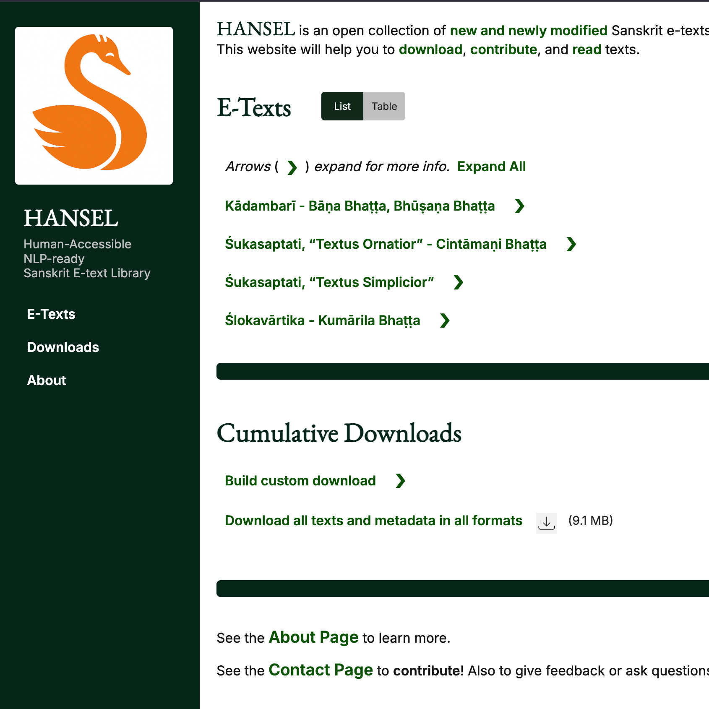
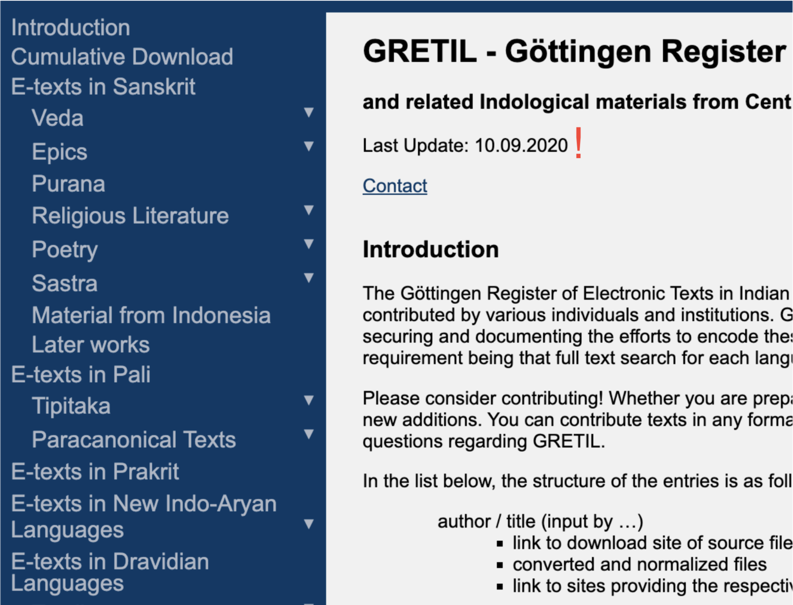

A blog on Sanskrit and tech, meant to share resources, identify gaps, and make new progress. Come along!
-

Kalpataru Grove
February 6, 2026
Articulating the vision of my ecosystem of Sanskrit digital tools and resources.
-

HANSEL: A companion to GRETIL
December 19, 2025
A new platform to pick up where GRETIL left off, welcoming contributions of academic Sanskrit e-texts.
-

Status Check (mini-post)
September 15, 2025
A brief update on what's been happening behind the scenes and what's coming next.
-

SETI: The New Register for Sanskrit E-Texts
April 23, 2025
Introducing a comprehensive index of Sanskrit electronic texts to help scholars discover digitized materials across six major collections.
-

Pāṇḍitya: A New Visual Exploration Tool for Sanskrit Intellectual Networks
February 7, 2025
Exploring connections between Sanskrit scholars, texts, and traditions through interactive network visualization.
-

Splitter Options
October 31, 2024
Comparing Sanskrit word-splitting tools from the 2018 model to the new 2024 ByT5-Sanskrit, with accuracy and speed benchmarks.
-

GRETIL: Past and Present
July 6, 2024
The history and current state of one of the most important repositories of digitized Sanskrit texts.
-

OCR Options
May 5, 2024
A practical guide to optical character recognition tools for Sanskrit and Devanagari texts, from Google Cloud Vision to Tesseract.
-

Vātāyana
April 7, 2024
A novel system for extracting expert philological insights from a corpus of Sanskrit philosophy texts, combining LDA topic modeling, TF-IDF, and local text alignment.
-

Pramāṇa NLP
March 24, 2024
A curated corpus of Sanskrit philosophy texts designed for natural language processing, with five key design principles.
-

Skrutable
March 10, 2024
The story of my Sanskrit text processing toolkit: transliteration, meter analysis, word splitting, and OCR.
-

Tools of the Trade
February 25, 2024
Preferred coding tech: Python, PyEnv, Flask, GitHub, Digital Ocean, and more.
-